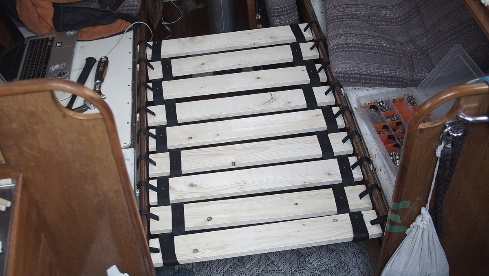

small space
Living in a boat, your living space is restricted when compared to a house. Our home contains our food, fuel, sailing and maintenance gear. It's a lot to carry and to manage. When choosing to live in a small space, you've got to learn to cohabit with these items.
Our space is small, but in the winter our space shrinks further because our two road bikes are allergic to wetness. One morning, having forgotten to check the weather, we woke up to find our boat with a thick blanket of snow—our bikes did not enjoy the experience, and neither did we because we had to dig them out.
Our limited arsenal of tools does not include a shovel, and so we took turns kicking snow off the deck and flicking it off with a dust pan. Bikes take up room, but they cut the distance between our ship and the grocery store. They earn their keep.
There is food everywhere on the boat. We buy in bulk because it’s cheaper, but then we also have more to put away. We are overrun with glass jars of pickled and dry goods. We hide our breakables where we can when we have to move the boat. Some days we find pickle jars nestled in our clothes, and sometimes clothes nestled between our pickle jars. We have little room for physical books, even if we prefer them over digital ones. Space is an issue, and so is weight. The heavier our boat gets, the slower we sail.
There are storage spaces everywhere. To get a thing, we often have to move another thing to get to it. This is a game we play multiple times a day, whether or not we want to. Want to sleep? Okay, but first, put the computer away, then remove the table and secure it to the wall, then put the slats in for the bed, place the cushions over top to form the mattress, and layer the blankets. When tired, making the bed can seem like a cruel, cruel chore.
Sailors often sleep with an ear on a battery, or a holding tank, tucked into a locker under a layer of wood and foam cushions. Sometimes, your bunk is neighbor to the diesel engine, the stove or the diesel tank too.
In all, we like living in a small space. Making so-called inconvenient choices exposes us to a risk of frustration and failure, but there is much to gain from doing these things.